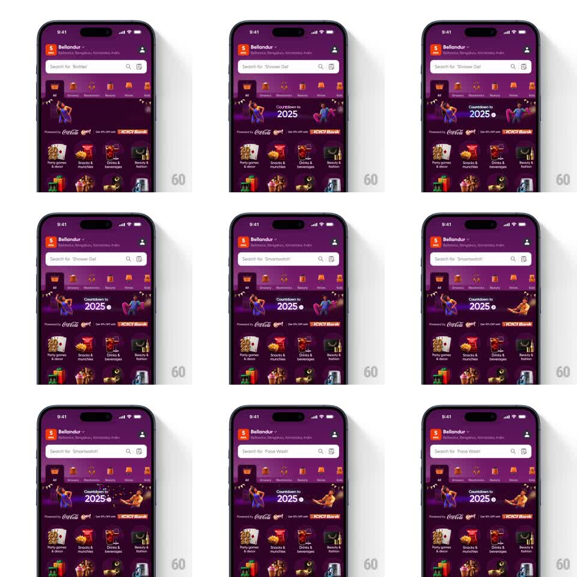

Media
Frame-by-frame

Rebuild this animation 1:1: Swiggy's New Year banner - "Countdown to 2025" between two dancing 3D characters on a purple festival stage, while the search bar above cycles placeholder suggestions with a vertical slide ticker.

Rebuild this animation 1:1: Swiggy's New Year banner - "Countdown to 2025" between two dancing 3D characters on a purple festival stage, while the search bar above cycles placeholder suggestions with a vertical slide ticker.
## Integration
Integration: stack-agnostic spec - springs given as stiffness/damping, timed motions as duration + curve; map every value to your framework and animation library of choice.
## Scene
Swiggy home (purple NYE theme): location header, search bar, category chips, then the banner: "Countdown to 2025" with a clock icon, flanked by two grooving characters, sponsor strip below ("Powered by Coca-Cola..."), category grid beneath.
## Motion spec
Pattern: two independent ambient loops.
- Dancers: each character loops a dance cycle (~1.2s bounce: translateY 0 -> -10px -> 0 with a 2-3deg torso tilt alternating sides); the two characters run the same cycle 180deg out of phase.
- "2025" numerals: subtle scale pulse with the dancers' beat (1 -> 1.03, 1.2s).
- Search placeholder ticker: suggestion text slides up out of the field and the next slides in from below (300ms, ease-out), rotating every ~2.5s ("Biryani" -> "Shower Gel" -> "Smartwatch"...).
- Confetti dots twinkle sparsely in the banner background (1.5s, random delays).
## Calibration
- The dancers' bounce is metronomic - they carry the beat; the numeral pulse and confetti are decorations.
- Ticker stays inside the search field; the search icon and mic don't move.
## Reduced motion
Static dancers; placeholder rotates with a 200ms crossfade.
## Don't miss
- Characters mirror each other (left dancer leans right, right dancer leans left).
- Sponsor strip stays static - readability.